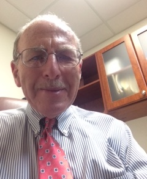

About Co-Author Dr. Edward Hanzelik
No one in my immediate family had ever been to college—so when I decided to go, it was a new adventure. While in high school, I started thinking about what I wanted to be, and the first thing I thought of was to become a lawyer. So after graduating from high school, I took a job on Wall Street with a very prominent law firm and quickly discovered that I did NOT want to be a lawyer. It was too much paperwork!
So I then decided to look into medicine, and began volunteering at a local hospital. I enjoyed being with the people in that environment and it was really upon that basis that I decided to become a doctor. I had had very few experiences with physicians prior to that time, and no one in my family had ever been a doctor. But I think I made a wonderful decision and I am very grateful for it.
However, from the very beginning of my medical career, even during my physician’s training, I hoped to get more out of the practice of medicine than the practice of medicine was offering. In fact, in my last year of residency I took several non-required courses like “Talking to Patients Who are Dying,” and “Doing Psychotherapy for Patients”—trying to learn different things to help patients through their crises.
During that time, I was also in charge of an entire medical floor at Beth Israel Hospital in Boston, and I oversaw interns, residents and attending doctors. We would do patient “rounds” where a team of thirty people, all in white coats, would gather around a person’s bed and go over their test results, where they were in their care, and what was going to happen next. It was really quite impressive.
However, I also did my own rounds, usually on Saturday or Sunday mornings, where I visited each of the patients on that floor. It soon became known as the “cry rounds” because the patients would start crying! I would hold their hands and listen to their experiences and hear how was it for them. And I could see how painful and difficult it was, and it really influenced my practice as a doctor. It was around this time that I started looking for a deeper understanding of life, and thankfully I found ways to go inside and have an inner experience of what I was looking for.
When I finished my residency at Beth Israel, I searched the want ads and found a job as a doctor for Glacier National Park. That was my first job as a physician—as summer doctor for the park. They gave me a little cabin to live in, right next to the clinic. And in the winter, it would snow so much that the snow would be as high as the top of the cabin! But it was a wonderful way to launch my career. And it’s been very exciting and enjoyable ever sense.
I’ve had my current practice of Internal Medicine in Southern California for the past twenty-five years, and I’ve worked with some really wonderful people, staff and patients. I have also learned that medicine has a lot of habits and rules that do not evolve very quickly. I feel that the human aspect of medicine is extremely important—helping people to achieve health for themselves. It requires practicing medicine from the heart rather than from the head or from the wallet. Being a doctor has a lot of benefits and the income is great, but I’ve learned that the real satisfaction comes in connecting with people and seeing their lives grow and open up and enhance.

Enjoy Dr. Hanzelik’s other book, The Inner Game of Stress: Outsmart Life’s Challenges and Fulfill Your Potential.
Dr. Edd